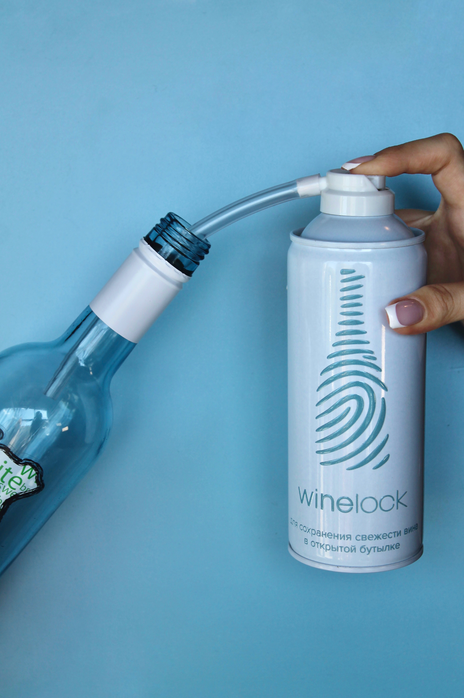

Как работает WineLock?
WineLock - это аэрозольный баллон с аргоном, который защищает вино от окисления, создавая невидимый барьер между вином и воздухом.

Снимите крышку

Поместите трубку в открытую бутылку вина

Распылите аргон
Нажмите на баллон и распылите газ в бутылку в течение нескольких секунд.
Закройте бутылку пробкой
После использования вставьте силиконовую пробку, чтобы герметично закрыть бутылку.